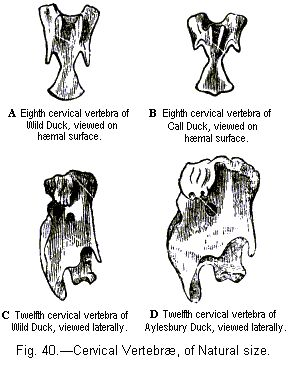

DUCKS, SEVERAL BREEDS OF — PROGRESS OF DOMESTICATION — ORIGIN OF FROM THE COMMON WILD-DUCK — DIFFERENCES IN THE DIFFERENT BREEDS — OSTEOLOGICAL DIFFERENCES — EFFECTS OF USE AND DISUSE ON THE LIMB-BONES.
GOOSE, ANCIENTLY DOMESTICATED — LITTLE VARIATION OF — SEBASTOPOL BREED.
PEACOCK, ORIGIN OF BLACK-SHOULDERED BREED.
TURKEY,BREEDS OF — CROSSED WITH THE UNITED STATES SPECIES — EFFECTS OF CLIMATE ON.
GUINEA-FOWL, CANARY-BIRD, GOLD-FISH, HIVE-BEES.
SILK-MOTHS, SPECIES AND BREEDS OF — ANCIENTLY DOMESTICATED — CARE IN THEIR SELECTION — DIFFERENCES IN THE DIFFERENT RACES — IN THE EGG, CATERPILLAR, AND COCOON STATES — INHERITANCE OF CHARACTERS — IMPERFECT WINGS — LOST INSTINCTS — CORRELATED CHARACTERS.
I will, as in previous cases, first briefly describe the chief domestic breeds of the duck:—
BREED 1. Common Domestic Duck.—Varies much in colour and in proportions, and differs in instincts and disposition from the wild duck. There are several sub-breeds:—(1) The Aylesbury, of great size, white, with pale-yellow beak and legs; abdominal dermal sack largely developed. (2) The Rouen, of great size, coloured like the wild duck, with green or mottled beak; dermal sack largely developed. (3) Tufted Duck, with a large top-knot of fine downy feathers, supported on a fleshy mass, with the skull perforated beneath. The top-knot in a duck which I imported from Holland was two and a half inches in diameter. (4) Labrador (or Canadian, or Buenos Ayres, or East Indian); plumage entirely black; beak broader, relatively to its length, than in the wild duck; eggs slightly tinted with black. This sub-breed perhaps ought to be ranked as a breed; it includes two sub-varieties, one as large as the common domestic duck, which I have kept alive, and the other smaller and often capable of flight.1 I presume it is this latter sub-variety which has been described in France2 as flying well, being rather wild, and when cooked having the flavour of the wild duck; nevertheless this sub-variety is polygamous, like other domesticated ducks and unlike the wild duck. These black Labrador ducks breed true; but a case is given by Dr. Turral of the French sub-variety producing young with some white feathers on the head and neck, and with an ochre-coloured patch on the breast.
BREED 2. Hook-billed Duck.—This bird presents an extraordinary appearance from the downward curvature of the beak. The head is often tufted. The common colour is white, but some are coloured like wild ducks. It is an ancient breed, having been noticed in 1676.3 It shows its prolonged domestication by almost incessantly laying eggs, like the fowls which are called everlasting layers.4
BREED 3. Call Duck.—Remarkable from its small size, and from the extraordinary loquacity of the female. Beak short. These birds are either white, or coloured like the wild duck.
BREED 4. Penguin Duck.—This is the most remarkable of all the breeds, and seems to have originated in the Malayan archipelago. It walks with its body extremely erect, and with its thin neck stretched straight upwards. Beak rather short. Tail upturned, including only 18 feathers. Femur and metatarsus elongated.
Almost all naturalists admit that the several breeds are descended from the common wild duck (Anas boschas); most fanciers, on the other hand, take as usual a very different view.5 Unless we deny that domestication, prolonged during centuries, can affect even such unimportant characters as colour, size, and in a slight degree proportional dimensions and mental disposition, there is no reason whatever to doubt that the domestic duck is descended from the common wild species, for the one differs from the other in no important character. We have some historical evidence with respect to the period and progress of the domestication of the duck. It was unknown6 to the ancient Egyptians, to the Jews of the Old Testament, and to the Greeks of the Homeric period. About eighteen centuries ago Columella7 and Varro speak of the necessity of keeping ducks in netted enclosures like other wild fowl, so that at this period there was danger of their flying away. Moreover, the plan recommended by Columella to those who wish to increase their stock of ducks, namely, to collect the eggs of the wild bird and to place them under a hen, shows, as Mr. Dixon remarks, "that the duck had not at this time become a naturalised and prolific inmate of the Roman poultry-yard." The origin of the domestic duck from the wild species is recognised in nearly every language of Europe, as Aldrovandi long ago remarked, by the same name being applied to both. The wild duck has a wide range from the Himalayas to North America. It crosses readily with the domestic bird, and the crossed offspring are perfectly fertile.
Both in North America and Europe the wild duck has been found easy to tame and breed. In Sweden this experiment was carefully tried by Tiburtius; he succeeded in rearing wild ducks for three generations, but, though they were treated like common ducks, they did not vary even in a single feather. The young birds suffered from being allowed to swim about in cold water,8 as is known to be the case, though the fact is a strange one, with the young of the common domestic duck. An accurate and well-known observer in England9 has described in detail his often repeated and successful experiments in domesticating the wild duck. Young birds are easily reared from eggs hatched under a bantam; but to succeed it is indispensable not to place the eggs of both the wild and tame duck under the same hen, for in this case "the young wild ducks die off, leaving their more hardy brethren in undisturbed possession of their foster-mother's care. The difference of habit at the onset in the newly-hatched ducklings almost entails such a result to a certainty." The wild ducklings were from the first quite tame towards those who took care of them as long as they wore the same clothes, and likewise to the dogs and cats of the house. They would even snap with their beaks at the dogs, and drive them away from any spot which they coveted. But they were much alarmed at strange men and dogs. Differently from what occurred in Sweden, Mr. Hewitt found that his young birds always changed and deteriorated in character in the course of two or three generations; notwithstanding that great care was taken to prevent their crossing with tame ducks. After the third generation his birds lost the elegant carriage of the wild species, and began to acquire the gait of the common duck. They increased in size in each generation, and their legs became less fine. The white collar round the neck of the mallard became broader and less regular, and some of the longer primary wing-feathers became more or less white. When this occurred, Mr. Hewitt destroyed nearly the whole of his stock and procured fresh eggs from wild nests; so that he never bred the same family for more than five or six generations. His birds continued to pair together, and never became polygamous like the common domestic duck. I have given these details, because no other case, as far as I know, has been so carefully recorded by a competent observer of the progress of change in wild birds reared for several generations in a domestic condition.
From these considerations there can hardly be a doubt that the wild duck is the parent of the common domestic kind; nor need we look to other species for the parentage of the more distinct breeds, namely, Penguin, Call, Hook-billed, Tufted, and Labrador ducks. I will not repeat the arguments used in the previous chapters on the improbability of man having in ancient times domesticated several species since become unknown or extinct, though ducks are not readily exterminated in the wild state;—on some of the supposed parent-species having had abnormal characters in comparison with all the other species of the genus, as with Hook-billed and Penguin ducks;—on all the breeds, as far as is known being fertile together;10—on all the breeds having the same general disposition, instinct, etc. But one fact bearing on this question may be noticed: in the great duck family, one species alone, namely, the male of A. boschas, has its four middle tail-feathers curled upwardly; now in every one of the above-named domestic breeds these curled feathers exist, and on the supposition that they are descended from distinct species, we must assume that man formerly hit upon species all of which had this now unique character. Moreover, sub-varieties of each breed are coloured almost exactly like the wild duck, as I have seen with the largest and smallest breeds, namely Rouens and Call ducks, and, as Mr. Brent states,11 is the case with Hook-billed ducks. This gentleman, as he informs me, crossed a white Aylesbury drake and a black Labrador duck, and some of the ducklings as they grew up assumed the plumage of the wild duck.
With respect to Penguins, I have not seen many specimens, and none were coloured precisely like the wild duck; but Sir James Brooke sent me three skins from Lombok and Bali, in the Malayan archipelago; the two females were paler and more rufous than the wild duck, and the drake differed in having the whole under and upper surface (excepting the neck, tail-coverts, tail, and wings) silver-grey, finely pencilled with dark lines, closely like certain parts of the plumage of the wild mallard. But I found this drake to be identical in every feather with a variety of the common breed procured from a farm-yard in Kent, and I have occasionally elsewhere seen similar specimens. The occurrence of a duck bred under so peculiar a climate as that of the Malayan archipelago, where the wild species does not exist, with exactly the same plumage as may occasionally be seen in our farm-yards, is a fact worth notice. Nevertheless the climate of the Malayan archipelago apparently tends to cause the duck to vary much, for Zollinger,12 speaking of the Penguin breed, says that in Lombok "there is an unusual and very wonderful variety of ducks." One Penguin drake which I kept alive differed from those of which the skins were sent me from Lombok, in having its breast and back partially coloured with chestnut-brown, thus more closely resembling the Mallard.
From these several facts, more especially from the drakes of all the breeds having curled tail-feathers, and from certain sub-varieties in each breed occasionally resembling in general plumage the wild duck, we may conclude with confidence that all the breeds are descended from A. boschas.
I will now notice some of the peculiarities characteristic of the several breeds. The eggs vary in colour; some common ducks laying pale-greenish and others quite white eggs. The eggs which are first laid during each season by the black Labrador duck, are tinted black, as if rubbed with ink. A good observer assured me that one year his ducks of this breed laid almost perfectly white eggs. Another curious case shows what singular variations sometimes occur and are inherited; Mr. Hansell13 relates that he had a common duck which always laid eggs with the yolk of a dark-brown colour like melted glue; and the young ducks, hatched from these eggs, laid the same kind of eggs, so that the breed had to be destroyed.
The Hook-billed duck is highly remarkable (see fig. 39, of skull); and its peculiar beak has been inherited at least since the year 1676. This structure is evidently analogous with that described in the Bagadotten carrier pigeon. Mr. Brent14 says that, when Hook-billed ducks are crossed with common ducks, "many young ones are produced with the upper mandible shorter than the lower, which not unfrequently causes the death of the bird." With ducks a tuft of feathers on the head is by no means a rare occurrence; namely, in the True-tufted breed, the Hook-billed, the common farm-yard kind, and in a duck having no other peculiarity which was sent to me from the Malayan archipelago. The tuft is only so far interesting as it affects the skull, which is thus rendered slightly more globular, and is perforated by numerous apertures. Call ducks are remarkable from their extraordinary loquacity: the drake only hisses like common drakes; nevertheless, when paired with the common duck, he transmits to his female offspring a strong quacking tendency. This loquacity seems at first a surprising character to have been acquired under domestication. But the voice varies in the different breeds; Mr. Brent15 says that Hook-billed ducks are very loquacious, and that Rouens utter a "dull, loud, and monotonous cry, easily distinguishable by an experienced ear." As the loquacity of the Call duck is highly serviceable, these birds being used in decoys, this quality may have been increased by selection. For instance, Colonel Hawker says, if young wild ducks cannot be got for a decoy, "by way of make-shift, select tame birds which are the most clamorous, even if their colour should not be like that of wild ones."16 It has been erroneously asserted that Call ducks hatch their eggs in less time than common ducks.17
The Penguin duck is the most remarkable of all the breeds; the thin neck and body are carried erect; the wings are small; the tail is upturned; and the thigh-bones and metatarsi are considerably lengthened in proportion with the same bones in the wild duck. In five specimens examined by me there were only eighteen tail-feathers instead of twenty as in the wild duck; but I have also found only eighteen and nineteen tail-feathers in two Labrador ducks. On the middle toe, in three specimens, there were twenty-seven or twenty-eight scutellæ, whereas in two wild ducks there were thirty-one and thirty-two. The Penguin when crossed transmits with much power its peculiar form of body and gait to its offspring; this was manifest with some hybrids raised in the Zoological Gardens between one of these birds and the Egyptian goose,18 (Anser ægyptiacus) and likewise with some mongrels which I raised between the Penguin and Labrador duck. I am not much surprised that some writers should maintain that this breed must be descended from an unknown and distinct species; but from the reasons already assigned, it seems to me far more probable that it is the descendant, much modified by domestication under an unnatural climate, of Anas boschas.
Osteological Characters.—The skulls of the several breeds differ from each other and from the skull of the wild duck in very little except in the proportional length and curvature of the premaxillaries. These latter bones in the Call duck are short, and a line drawn from their extremities to the summit of the skull is nearly straight, instead of being concave as in the common duck; so that the skull resembles that of a small goose. In the Hook-billed duck (fig. 39), these same bones as well as the lower jaw curve downwards in a most remarkable manner, as represented. In the Labrador duck the premaxillaries are rather broader than in the wild duck; and in two skulls of this breed the vertical ridges on each side of the supra-occipital bone are very prominent. In the Penguin the premaxillaries are relatively shorter than in the wild duck; and the inferior points of the paramastoids more prominent. In a Dutch tufted duck, the skull under the enormous tuft was slightly more globular and was perforated by two large apertures; in this skull the lachrymal bones were produced much further backwards, so as to have a different shape and nearly to touch the post. lat. processes of the frontal bones, thus almost completing the bony orbit of the eye. As the quadrate and pterygoid bones are of such complex shape and stand in relation with so many other bones, I carefully compared them in all the principal breeds; but excepting in size they presented no difference.
Vertebræ and Ribs.—In one skeleton of the Labrador duck there were the usual fifteen cervical vertebræ and the usual nine dorsal vertebræ bearing ribs; in the other skeleton there were fifteen cervical and ten dorsal vertebræ with ribs; nor, as far as could be judged, was this owing merely to a rib having been developed on the first lumbar vertebra; for in both skeletons the lumbar vertebræ agreed perfectly in number, shape, and size with those of the wild duck. In two skeletons of the Call duck there were fifteen cervical and nine dorsal vertebræ; in a third skeleton small ribs were attached to the so-called fifteenth cervical vertebra, making ten pairs of ribs; but these ten ribs do not correspond, or arise from the same vertebra, with the ten in the above-mentioned Labrador duck. In the Call duck, which had small ribs attached to the fifteenth cervical vertebra, the hæmal spines of the thirteenth and fourteenth (cervical) and of the seventeenth (dorsal) vertebræ corresponded with the spines on the fourteenth, fifteenth, and eighteenth vertebræ of the wild duck: so that each of these vertebræ had acquired a structure proper to one posterior to it in position. In the eighth cervical vertebra of this same Call duck (fig. 40, B), the two branches of the hæmal spine stand much closer together than in the wild duck (A), and the descending hæmal processes are much shortened. In the Penguin duck the neck from its thinness and erectness falsely appears (as ascertained by measurement) to be much elongated, but the cervical and dorsal vertebræ present no difference; the posterior dorsal vertebræ, however, are more completely anchylosed to the pelvis than in the wild duck. The Aylesbury duck has fifteen cervical and ten dorsal vertebræ furnished with ribs, but the same number of lumbar, sacral, and caudal vertebræ, as far as could be traced, as in the wild duck. The cervical vertebræ in this same duck (fig. 40, D) were much broader and thicker relatively to their length than in the wild (C); so much so, that I have thought it worth while to give a sketch of the twelfth cervical vertebra in these two birds. From the foregoing statements we see that the fifteenth cervical vertebra occasionally becomes modified into a dorsal vertebra, and when this occurs all the adjoining vertebræ are modified. We also see that an additional dorsal vertebra bearing a rib is occasionally developed, the number of the cervical and lumbar vertebræ apparently remaining the same as usual.
I examined the bony enlargement of the trachea in the males of the Penguin, Call, Hook-billed, Labrador, and Aylesbury breeds; and in all it was identical in shape.
The pelvis is remarkably uniform; but in the skeleton of the Hook-billed duck the anterior part is much bowed inwards; in the Aylesbury and some other breeds the ischiadic foramen is less elongated. In the sternum, furculum, coracoids, and scapulæ, the differences are so slight and so variable as not to be worth notice, except that in two skeletons of the Penguin duck the terminal portion of the scapula was much attenuated.
In the bones of the leg and wing no modification in shape could be observed. But in the Penguin and Hook-billed ducks, the terminal phalanges of the wing are a little shortened. In the former, the femur, and metatarsus (but not the tibia) are considerably lengthened, relatively to the same bones in the wild duck, and to the wing-bones in both birds. This elongation of the leg-bones could be seen whilst the bird was alive, and is no doubt connected with its peculiar upright manner of walking. In a large Aylesbury duck, on the other hand, the tibia was the only bone of the leg which relatively to the other bones was slightly lengthened.
On the effects of the increased and decreased Use of the Limbs.—In all the breeds the bones of the wing (measured separately after having been cleaned) relatively to those of the leg have become slightly shortened, in comparison with the same bones in the wild duck, as may be seen in Table I.
| Name of Breed | Length of Femur, Tibia, and Meta- tarsus together |
Length of Humerus, Radius, and Meta- carpus together |
Or as |
| Inches | Inches | ||
| Wild mallard | 7·14 | 9·28 | 100 : 129 |
| Aylesbury | 8·64 | 10·43 | 100 : 120 |
| Tufted (Dutch) | 8·25 | 9·83 | 100 : 119 |
| Penguin | 7·12 | 8·78 | 100 : 123 |
| Call | 6·20 | 7·77 | 100 : 125 |
| Length of same Bones |
Length of all the Bones of Wing |
||
| Inches | Inches | ||
| Wild duck (another specimen) | 6·85 | 10·07 | 100 : 147 |
| Common domestic duck | 8·15 | 11·26 | 100 : 138 |
In Table I we see, by comparison with the wild duck, that the reduction in the length of the bones of the wing, relatively to those of the legs, though slight, is universal. The reduction is least in the Call duck, which has the power and the habit of frequently flying.
In weight there is a greater relative difference between the bones of the leg and wing, as may be seen in Table II:—
| Name of Breed | Weight of Femur, Tibia, and Metatarsus |
Weight of Humerus, Radius, and Metacarpus |
Or as |
| Grains | Grains | ||
| Wild mallard | 54 | 97 | 100 : 179 |
| Aylesbury | 164 | 204 | 100 : 124 |
| Hooked-bill | 107 | 160 | 100 : 149 |
| Tufted (Dutch) | 111 | 148 | 100 : 133 |
| Penguin | 75 | 90.5 | 100 : 120 |
| Labrador | 141 | 165 | 100 : 117 |
| Call | 57 | 93 | 100 : 163 |
| Weight of all the Bones of the Leg and Foot |
Weight of all the Bones of the Wing |
||
| Grains | Grains | ||
| Wild (another specimen) | 66 | 115 | 100 : 173 |
| Common domestic duck | 127 | 158 | 100 : 124 |
In these domesticated birds, the considerably lessened weight of the bones of the wing (i.e. on an average, twenty-five per cent of their proper proportional weight), as well as their slightly lessened length, relatively to the leg-bones, might follow, not from any actual decrease in the wing-bones, but from the increased weight and length of the bones of the legs. Table IIIa shows that the leg-bones relatively to the weight of the entire skeleton have really increased in weight; but Table IIIb shows that according to the same standard the wing-bones have also really decreased in weight; so that the relative disproportion shown in the foregoing tables between the wing and leg-bones, in comparison with those of the wild duck, is partly due to the increase in weight and length of the leg-bones, and partly to the decrease in weight and length of the wing-bones.
| Name of Breed | Weight of entire Skeleton. (N.B. One Metatarsus and Foot was removed from each skeleton, as it had been accidentally lost in two cases.) |
Weight of Femur, Tibia, and Metatarsus |
Or as |
| Grains | Grains | ||
| Wild mallard | 839 | 54 | 1000 : 64 |
| Aylesbury | 1925 | 164 | 1000 : 85 |
| Tufted (Dutch) | 1404 | 111 | 1000 : 79 |
| Penguin | 871 | 75 | 1000 : 86 |
| Call (from Mr. Fox) | 717 | 57 | 1000 : 79 |
| Weight of Skeleton as above. |
Weight of Humerus, Radius and Metacarpus. |
||
| Grains | Grains | ||
| Wild mallard | 839 | 97 | 1000 : 115 |
| Aylesbury | 1925 | 204 | 1000 : 105 |
| Tufted (Dutch) | 1404 | 148 | 1000 : 105 |
| Penguin | 871 | 90 | 1000 : 103 |
| Call (from Mr. Baker) | 914 | 100 | 1000 : 109 |
| Call (from Mr. Fox) | 717 | 92 | 1000 : 129 |
With respect to Table III, I may first state that I tested them by taking another skeleton of a wild duck and of a common domestic duck, and by comparing the weight of all the bones of the leg with all those of the wings, and the result was the same. In the first of these tables we see that the leg-bones in each case have increased in actual weight. It might have been expected that, with the increased or decreased weight of the entire skeleton, the leg-bones would have become proportionally heavier or lighter; but their greater weight in all the breeds relatively to the other bones can be accounted for only by these domestic birds having used their legs in walking and standing much more than the wild, for they never fly, and the more artificial breeds rarely swim. In the second table we see, with the exception of one case, a plain reduction in the weight of the bones of the wing, and this no doubt has resulted from their lessened use. The one exceptional case, namely, in one of the Call ducks, is in truth no exception, for this bird was constantly in the habit of flying about; and I have seen it day after day rise from my grounds, and fly for a long time in circles of more than a mile in diameter. In this Call duck there is not only no decrease, but an actual increase in the weight of the wing-bones relatively to those of the wild-duck; and this probably is consequent on the remarkable lightness and thinness of all the bones of the skeleton.
Lastly, I weighed the furculum, coracoids, and scapula of a wild duck and of a common domestic duck, and I found that their weight, relatively to that of the whole skeleton, was as one hundred in the former to eighty-nine in the latter; this shows that these bones in the domestic duck have been reduced eleven per cent of their due proportional weight. The prominence of the crest of the sternum, relatively to its length, is also much reduced in all the domestic breeds. These changes have evidently been caused by the lessened use of the wings.
It is well known that several birds, belonging to different Orders, and inhabiting oceanic islands, have their wings greatly reduced in size and are incapable of flight. I suggested in my 'Origin of Species' that, as these birds are not persecuted by any enemies, the reduction of their wings had probably been caused by gradual disuse. Hence, during the earlier stages of the process of reduction, such birds would probably have resembled our domesticated ducks in the state of their organs of flight. This is the case with the water-hen (Gallinula nesiotis) of Tristan d'Acunha, which "can flutter a little, but obviously uses its legs, and not its wings, as a mode of escape." Now Mr. Sclater19 finds in this bird that the wings, sternum, and coracoids are all reduced in length, and the crest of the sternum in depth, in comparison with the same bones in the European water-hen (G. chloropus). On the other hand, the thigh-bones and pelvis are increased in length, the former by four lines, relatively to the same bones in the common water-hen. Hence in the skeleton of this natural species nearly the same changes have occurred, only carried a little further, as with our domestic ducks, and in this latter case I presume no one will dispute that they have resulted from the lessened use of the wings and the increased use of the legs.
This bird deserves some notice, as hardly any other anciently domesticated bird or quadruped has varied so little. That geese were anciently domesticated we know from certain verses in Homer; and from these birds having been kept (388 B.C.) in the Capitol at Rome as sacred to Juno, which sacredness implies great antiquity.20 That the goose has varied in some degree, we may infer from naturalists not being unanimous with respect to its wild parent-form; though the difficulty is chiefly due to the existence of three or four closely allied wild European species.21 A large majority of capable judges are convinced that our geese are descended from the wild Grey-leg goose (A. ferus); the young of which can easily be tamed.22 This species, when crossed with the domestic goose, produced in the Zoological Gardens, as I was assured in 1849, perfectly fertile offspring.23 Yarrell24 has observed that the lower part of the trachea of the domestic goose is sometimes flattened, and that a ring of white feathers sometimes surrounds the base of the beak. These characters seem at first sight good indications of a cross at some former period with the white-fronted goose (A. albifrons); but the white ring is variable in this latter species, and we must not overlook the law of analogous variation; that is, of one species assuming some of the characters of allied species.
As the goose has proved so little flexible in its organisation under long-continued domestication, the amount of variation which it has undergone may be worth giving. It has increased in size and in productiveness;25 and varies from white to a dusky colour. Several observers26 have stated that the gander is more frequently white than the goose, and that when old it almost invariably becomes white; but this is not the case with the parent-form, the A. ferus. Here, again, the law of analogous variation may have come into play, as the almost snow-white male of the Rock goose (Bernicla antarctica) standing on the sea-shore by his dusky partner is a sight well known to those who have traversed the sounds of Tierra del Fuego and the Falkland Islands. Some geese have top-knots; and the skull beneath, as before stated, is perforated. A sub-breed has lately been formed with the feathers reversed at the back of the head and neck.27 The beak varies a little in size, and is of a yellower tint than in the wild species; but its colour and that of the legs are both slightly variable.28 This latter fact deserves attention, because the colour of the legs and beak is highly serviceable in discriminating the several closely allied wild forms.29 At our Shows two breeds are exhibited; viz., the Embden and Toulouse; but they differ in nothing except colour.30 Recently a smaller and singular variety has been imported from Sebastopol,31 with the scapular feathers (as I hear from Mr. Tegetmeier, who sent me specimens) greatly elongated, curled, and even spirally twisted. The margins of these feathers are rendered plumose by the divergence of the barbs and barbules, so that they resemble in some degree those on the back of the black Australian swan. These feathers are likewise remarkable from the central shaft, which is excessively thin and transparent, being split into fine filaments, which, after running for a space free, sometimes coalesce again. It is a curious fact that these filaments are regularly clothed on each side with fine down or barbules, precisely like those on the proper barbs of the feather. This structure of the feathers is transmitted to half-bred birds. In Gallus sonneratii the barbs and barbules blend together, and form thin horny plates of the same nature with the shaft: in this variety of the goose, the shaft divides into filaments which acquire barbules, and thus resemble true barbs.
Although the domestic goose certainly differs somewhat from any known wild species, yet the amount of variation which it has undergone, as compared with that of most domesticated animals, is singularly small. This fact can be partially accounted for by selection not having come largely into play. Birds of all kinds which present many distinct races are valued as pets or ornaments; no one makes a pet of the goose; the name, indeed, in more languages than one, is a term of reproach. The goose is valued for its size and flavour, for the whiteness of its feathers which adds to their value, and for its prolificness and tameness. In all these points the goose differs from the wild parent-form; and these are the points which have been selected. Even in ancient times the Roman gourmands valued the liver of the WHITE goose; and Pierre Belon32 in 1555 speaks of two varieties, one of which was larger, more fecund, and of a better colour than the other; and he expressly states that good managers attended to the colour of their goslings, so that they might know which to preserve and select for breeding.
This is another bird which has hardly varied under domestication, except in sometimes being white or piebald. Mr. Waterhouse carefully compared, as he informs me, skins of the wild Indian and domestic bird, and they were identical in every respect, except that the plumage of the latter was perhaps rather thicker. Whether our birds are descended from those introduced into Europe in the time of Alexander, or have been subsequently imported, is doubtful. They do not breed very freely with us, and are seldom kept in large numbers,—circumstances which would greatly interfere with the gradual selection and formation of new breeds. There is one strange fact with respect to the peacock, namely, the occasional appearance in England of the "japanned" or "black-shouldered" kind. This form has lately been named on the high authority of Mr. Sclater as a distinct species, viz. Pavo nigripennis, which he believes will hereafter be found wild in some country, but not in India, where it is certainly unknown. The males of these japanned birds differ conspicuously from the common peacock in the colour of their secondary wing-feathers, scapulars, wing-coverts, and thighs, and are I think more beautiful; they are rather smaller than the common sort, and are always beaten by them in their battles, as I hear from the Hon. A. S. G. Canning. The females are much paler coloured than those of the common kind. Both sexes, as Mr. Canning informs me, are white when they leave the egg, and they differ from the young of the white variety only in having a peculiar pinkish tinge on their wings. These japanned birds, though appearing suddenly in flocks of the common kind, propagate their kind quite truly. Although they do not resemble the hybrids which have been raised between P. cristatus and muticus, nevertheless they are in some respects intermediate in character between these two species; and this fact favours, as Mr. Sclater believes, the view that they form a distinct and natural species.33
On the other hand, Sir H. Heron states34 that this breed suddenly appeared within his memory in Lord Brownlow's large stock of pied, white, and common peacocks. The same thing occurred in Sir J. Trevelyan's flock composed entirely of the common kind, and in Mr. Thornton's stock of common and pied peacocks. It is remarkable that in these two latter instances the black-shouldered kind, though a smaller and weaker bird, increased, "to the extinction of the previously existing breed." I have also received through Mr. Sclater a statement from Mr. Hudson Gurney that he reared many years ago a pair of black-shouldered peacocks from the common kind; and another ornithologist, Prof. A. Newton, states that, five or six years ago, a female bird, in all respects similar to the female of the black-shouldered kind, was produced from a stock of common peacocks in his possession, which during more than twenty years had not been crossed with birds of any other strain. Mr. Jenner Weir informs me that a peacock at Blackheath whilst young was white, but as it became older gradually assumed the characters of the black-shouldered variety; both its parents were common peacocks. Lastly, Mr. Canning has given a case of a female of this same variety appearing in Ireland in a flock of the ordinary kind.35 Here, then, we have seven well authenticated cases in Great Britain of japanned birds, having suddenly appeared within recent times in flocks of the common peafowl. This variety must also have formerly appeared in Europe, for Mr. Canning has seen an old picture, and another is referred to in the 'Field,' with this variety represented. These facts seem to me to indicate that the japanned peacock is a strongly marked variety or "sport," which tends at all times and in many places to reappear. This view is supported by the young being at first white like the young of the white breed, which is undoubtedly a variation. If, on the other hand, we believe the japanned peacock to be a distinct species, we must suppose that in all the above cases the common breed had at some former period been crossed by it, but had lost every trace of the cross; yet that the offspring of these birds suddenly and completely reacquired through reversion the characters of P. nigripennis. I have heard of no other such case in the animal or vegetable kingdom. To perceive the full improbability of such an occurrence, we may suppose that a breed of dogs had been crossed at some former period with a wolf, but had lost every trace of the wolf-like character, yet that the breed gave birth in seven instances in the same country, within no great length of time, to a wolf perfect in every character; and we must further suppose that in two of the cases, the newly produced wolves afterwards spontaneously increased to such an extent as to lead to the extinction of the parent breed of dogs. So remarkable a bird as the P. nigripennis, when first imported, would have realised a large price; it is therefore improbable that it should have been silently introduced and its history subsequently lost. On the whole the evidence seems to me, as it did to Sir R. Heron, to be decisive in favour of the japanned or black-shouldered breed being a variation, induced by some unknown cause. On this view, the case is the most remarkable one ever recorded of the abrupt appearance of a new form, which so closely resembles a true species that it has deceived one of the most experienced of living ornithologists.
It seems fairly well established by Mr. Gould,36 that the turkey, in accordance with the history of its first introduction, is descended from a wild Mexican form, which had been domesticated by the natives before the discovery of America, and which is now generally ranked as a local race, and not as a distinct species. However this may be, the case deserves notice because in the United States wild male turkeys sometimes court the domestic hens, which are descended from the Mexican form, "and are generally received by them with great pleasure."37 Several accounts have likewise been published of young birds, reared in the United States from the eggs of the wild species, crossing and commingling with the common breed. In England, also, this same species has been kept in several parks; from two of which the Rev. W. D. Fox procured birds, and they crossed freely with the common domestic kind, and during many years afterwards, as he informs me, the turkeys in his neighbourhood clearly showed traces of their crossed parentage. We here have an instance of a domestic race being modified by a cross with a distinct wild race or species. F. Michaux38 suspected in 1802 that the common domestic turkey was not descended from the United States species alone, but likewise from a southern form, and he went so far as to believe that English and French turkeys differed from having different proportions of the blood of the two parent-forms.
English turkeys are smaller than either wild form. They have not varied in any great degree; but there are some breeds which can be distinguished as Norfolks, Suffolks, Whites, and Copper-coloured (or Cambridge), all of which, if precluded from crossing with other breeds propagate their kind truly. Of these kinds, the most distinct is the small, hardy, dull-black Norfolk turkey, of which the chickens are black, occasionally with white patches about the head. The other breeds scarcely differ except in colour, and their chickens are generally mottled all over with brownish-grey.39 The inferior tail-coverts vary in number, and according to a German superstition the hen lays as many eggs as the cock has feathers of this kind.40 Albin in 1738, and Temminck within a much later period, describe a beautiful breed, dusky-yellowish, brown above and white beneath, with a large top-knot of soft plumose feather. The spurs of the male were rudimentary. This breed has been for a long time extinct in Europe; but a living specimen has lately been imported from the east coast of Africa, which still retains the top-knot and the same general colouring and rudimentary spurs.41 Mr. Wilmot has described42 a white turkey-cock having a crest formed of "feathers about four inches long, with bare quills, and a tuft of soft white down growing at the end." Many of the young birds inherited this kind of crest, but afterwards it fell off or was pecked out by the other birds. This is an interesting case, as with care a new breed might probably have been formed; and a top-knot of this nature would have been to a certain extent analogous to that borne by the males in several allied genera, such as Euplocomus, Lophophorus, and Pavo.
Wild turkeys, believed in every instance to have been imported from the United States, have been kept in the parks of Lords Powis, Leicester, Hill, and Derby. The Rev. W. D. Fox procured birds from the two first-named parks, and he informs me that they certainly differed a little from each other in the shape of their bodies and in the barred plumage on their wings. These birds likewise differed from Lord Hill's stock. Some of the latter kept at Oulton by Sir P. Egerton, though precluded from crossing with common turkeys, occasionally produced much paler-coloured birds, and one that was almost white, but not an albino. These half-wild turkeys, in thus differing slightly from each other, present an analogous case with the wild cattle kept in the several British parks. We must suppose that such differences have resulted from the prevention of free intercrossing between birds ranging over a wide area, and from the changed conditions to which they have been exposed in England. In India the climate has apparently wrought a still greater change in the turkey, for it is described by Mr. Blyth43 as being much degenerated in size, "utterly incapable of rising on the wing," of a black colour, and "with the long pendulous appendages over the beak enormously developed."
The domesticated Guinea fowl is now believed by some naturalists to be descended from the Numida ptilorhynca, which inhabits very hot, and, in parts, extremely arid districts in Eastern Africa; consequently it has been exposed in this country to extremely different conditions of life. Nevertheless it has hardly varied at all, except in the plumage being either paler or darker-coloured. It is a singular fact that this bird varies more in colour in the West Indies and on the Spanish Main, under a hot though humid climate, than in Europe.44 The Guinea fowl has become thoroughly feral in Jamaica and in St. Domingo,45 and has diminished in size; the legs are black, whereas the legs of the aboriginal African bird are said to be grey. This small change is worth notice on account of the often-repeated statement that all feral animals invariably revert in every character to their original type.
As this bird has been recently domesticated, namely, within the last 350 years, its variability deserves notice. It has been crossed with nine or ten other species of Fringillidæ, and some of the hybrids are almost completely fertile; but we have no evidence that any distinct breed has originated from such crosses. Notwithstanding the modern domestication of the canary, many varieties have been produced; even before the year 1718 a list of twenty-seven varieties was published in France,46 and in 1779 a long schedule of the desired qualities was printed by the London Canary Society, so that methodical selection has been practised during a considerable period. The greater number of the varieties differ only in colour and in the markings of their plumage. Some breeds however, differ in shape, such as the hooped or bowed canaries, and the Belgian canaries with their much elongated bodies. Mr. Brent47 measured one of the latter and found it eight inches in length, whilst the wild canary is only five and a quarter inches long. There are top-knotted canaries, and it is a singular fact that, if two top-knotted birds are matched, the young, instead of having very fine top-knots, are generally bald, or even have a wound on their heads.48 It would appear as if the top-knot were due to some morbid condition, which is increased to an injurious degree when two birds in this state are paired. There is a feather-footed breed, and another with a kind of frill running down the breast. One other character deserves notice from being confined to one period of life, and from being strictly inherited at the same period; namely, the wing and tail feathers in prize canaries being black, "but this colour is retained only until the first moult; once moulted, the peculiarity ceases."49 Canaries differ much in disposition and character, and in some small degree in song. They produce eggs three or four times during the year.
Besides mammals and birds, only a few animals belonging to the other great classes have been domesticated; but to show that it is an almost universal law that animals, when removed from their natural conditions of life, vary, and that races can be formed when selection is applied, it is necessary to say a few words on gold-fish, bees, and silk-moths.
Gold-fish (Cyprinus auratus) were introduced into Europe only two or three centuries ago; but they have been kept in confinement from an ancient period in China. Mr. Blyth50 suspects, from the analogous variation of other fishes, that golden-coloured fish do not occur in a state of nature. These fishes frequently live under the most unnatural conditions, and their variability in colour, size, and in some important points of structure is very great. M. Sauvigny has described and given coloured drawings of no less than eighty-nine varieties.51 Many of the varieties, however, such as triple tail-fins, etc., ought to be called monstrosities; but it is difficult to draw any distinct line between a variation and a monstrosity. As gold-fish are kept for ornament or curiosity, and as "the Chinese are just the people to have secluded a chance variety of any kind, and to have matched and paired from it,"52 it might have been predicted that selection would have been largely practised in the formation of new breeds; and this is the case. In an old Chinese work it is said that fish with vermilion scales were first raised in confinement during the Sung dynasty (which commenced A.D. 960), "and now they are cultivated in families everywhere for the sake of ornament." In another and more ancient work, it is said that "there is not a household where the gold-fish is not cultivated, in rivalry as to its colour, and as a source of profit," etc.53 Although many breeds exist, it is a singular fact that the variations are often not inherited. Sir R. Heron54 kept many of these fishes, and placed all the deformed ones, namely, those destitute of dorsal fins and those furnished with a double anal fin, or triple tail, in a pond by themselves; but they did "not produce a greater proportion of deformed offspring than the perfect fishes."
Passing over an almost infinite diversity of colour, we meet with the most extraordinary modifications of structure. Thus, out of about two dozen specimens bought in London, Mr. Yarrell observed some with the dorsal fin extending along more than half the length of the back: others with this fin reduced to only five or six rays: and one with no dorsal fin. The anal fins are sometimes double, and the tail is often triple. This latter deviation of structure seems generally to occur "at the expense of the whole or part of some other fin;55 but Bory de Saint-Vincent56 saw at Madrid gold-fish furnished with a dorsal fin and a triple tail. One variety is characterised by a hump on its back near the head; and the Rev. L. Jenyns57 has described a most singular variety, imported from China, almost globular in form like a Diodon, with "the fleshy part of the tail as if entirely cut away? the caudal fin being set on a little behind the dorsal and immediately above the anal." In this fish the anal and caudal fins were double; the anal fin being attached to the body in a vertical line: the eyes also were enormously large and protuberant.
Bees have been domesticated from an ancient period; if indeed their state can be considered one of domestication, for they search for their own food, with the exception of a little generally given to them during the winter. Their habitation is a hive instead of a hole in a tree. Bees, however, have been transported into almost every quarter of the world, so that climate ought to have produced whatever direct effect it is capable of producing. It is frequently asserted that the bees in different parts of Great Britain differ in size, colour, and temper; and Godron58 says that they are generally larger in the south than in other parts of France; it has also been asserted that the little brown bees of High Burgundy, when transported to La Bresse become large and yellow in the second generation. But these statements require confirmation. As far as size is concerned, it is known that bees produced in very old combs are smaller, owing to the cells having become smaller from the successive old cocoons. The best authorities59 concur that, with the exception of the Ligurian race or species, presently to be mentioned, distinct breeds do not exist in Britain or on the Continent. There is, however, even in the same stock, some variability in colour. Thus, Mr. Woodbury states,60 that he has several times seen queen bees of the common kind annulated with yellow-like Ligurian queens, and the latter dark-coloured like common bees. He has also observed variations in the colour of the drones, without any corresponding difference in the queens or workers of the same hive. The great apiarian, Dzierzon, in answer to my queries on this subject, says,61 that in Germany bees of some stocks are decidedly dark, whilst others are remarkable for their yellow colour. Bees also seem to differ in habits in different districts, for Dzierzon adds, "If many stocks with their offspring are more inclined to swarm, whilst others are richer in honey, so that some bee-keepers even distinguish between swarming and honey-gathering bees, this is a habit which has become second nature, caused by the customary mode of keeping the bees and the pasturage of the district. For example, what a difference in this respect one may perceive to exist between the bees of the Luneburg heath and those of this country!" . . . "Removing an old queen and substituting a young one of the current year is here an infallible mode of keeping the strongest stock from swarming and preventing drone-breeding; whilst the same means if adopted in Hanover would certainly be of no avail." I procured a hive full of dead bees from Jamaica, where they have long been naturalised, and, on carefully comparing them under the microscope with my own bees, I could detect not a trace of difference.
This remarkable uniformity in the hive-bee, wherever kept, may probably be accounted for by the great difficulty, or rather impossibility, of bringing selection into play by pairing particular queens and drones, for these insects unite only during flight. Nor is there any record, with a single partial exception, of any person having separated and bred from a hive in which the workers presented some appreciable difference. In order to form a new breed, seclusion from other bees would, as we now know, be indispensable; for since the introduction of the Ligurian bee into Germany and England, it has been found that the drones wander at least two miles from their own hives, and often cross with the queens of the common bee.62 The Ligurian bee, although perfectly fertile when crossed with the common kind, is ranked by most naturalists as a distinct species, whilst by others it is ranked as a variety: but this form need not here be noticed, as there is no reason to believe that it is the product of domestication. The Egyptian and some other bees are likewise ranked by Dr. Gerstäcker,63 but not by other highly competent judges, as geographical races; he grounds his conclusion in chief part on the fact that in certain districts, as in the Crimea and Rhodes, they vary so much in colour, that the several geographical races can be closely connected by intermediate forms.
I have alluded to a single instance of the separation and preservation of a particular stock of bees. Mr. Lowe64 procured some bees from a cottager a few miles from Edinburgh, and perceived that they differed from the common bee in the hairs on the head and thorax being lighter coloured and more profuse in quantity. From the date of the introduction of the Ligurian bee into Great Britain we may feel sure that these bees had not been crossed with this form. Mr. Lowe propagated this variety, but unfortunately did not separate the stock from his other bees, and after three generations the new character was almost completely lost. Nevertheless, as he adds, "a great number of the bees still retain traces, though faint, of the original colony." This case shows us what could probably be effected by careful and long-continued selection applied exclusively to the workers, for, as we have seen, queens and drones cannot be selected and paired.
These insects are in several respects interesting to us, more especially because they have varied largely at an early period of life, and the variations have been inherited at corresponding periods. As the value of the silk-moth depends entirely on the cocoon, every change in its structure and qualities has been carefully attended to, and races differing much in the cocoon, but hardly at all in the adult state, have been produced. With the races of most other domestic animals, the young resemble each other closely, whilst the adults differ much.
It would be useless, even if it were possible, to describe all the many kinds of silkworms. Several distinct species exist in India and China which produce useful silk, and some of these are capable of freely crossing with the common silk-moth, as has been recently ascertained in France. Captain Hutton65 states that throughout the world at least six species have been domesticated; and he believes that the silk-moths reared in Europe belong to two or three species. This, however, is not the opinion of several capable judges who have particularly attended to the cultivation of this insect in France; and hardly accords with some facts presently to be given.
The common silk-moth (Bombyx mori) was brought to Constantinople in the sixth century, whence it was carried into Italy, and in 1494 into France.66 Everything has been favourable for the variation of this insect. It is believed to have been domesticated in China as long ago as 2700 B.C. It has been kept under unnatural and diversified conditions of life, and has been transported into many countries. There is reason to believe that the nature of the food given to the caterpillar influences to a certain extent the character of the breed.67 Disuse has apparently aided in checking the development of the wings. But the most important element in the production of the many now existing, much modified races, no doubt has been the close attention which has long been applied in many countries to every promising variation. The care taken in Europe in the selection of the best cocoons and moths for breeding is notorious,68 and the production of eggs is followed as a distinct trade in parts of France. I have made inquiries through Dr. Falconer, and am assured that in India the natives are equally careful in the process of selection. In China the production of eggs is confined to certain favourable districts, and the raisers are precluded by law from producing silk, so that their whole attention may be necessarily given up to this one object.69
The following details on the differences between the several breeds are taken, when not stated to the contrary, from M. Robinet's excellent work,70 which bears every sign of care and large experience. The eggs in the different races vary in colour, in shape (being round, elliptic or oval), and in size. The eggs laid in June in the south of France, and in July in the central provinces, do not hatch until the following spring; and it is in vain, says M. Robinet, to expose them to a temperature gradually raised, in order that the caterpillar may be quickly developed. Yet occasionally, without any known cause, batches of eggs are produced, which immediately begin to undergo the proper changes, and are hatched in from twenty to thirty days. From these and some other analogous facts it may be concluded that the Trevoltini silkworms of Italy, of which the caterpillars are hatched in from fifteen to twenty days, do not necessarily form, as has been maintained, a distinct species. Although the breeds which live in temperate countries produce eggs which cannot be immediately hatched by artificial heat, yet when they are removed to and reared in a hot country they gradually acquire the character of quick development, as in the Trevoltini races.71
Caterpillars.—These vary greatly in size and colour. The skin is generally white, sometimes mottled with black or grey, and occasionally quite black. The colour, however, as M. Robinet asserts, is not constant, even in perfectly pure breeds; except in the race tigrée, so called from being marked with transverse black stripes. As the general colour of the caterpillar is not correlated with that of the silk,72 this character is disregarded by cultivators, and has not been fixed by selection. Captain Hutton, in the paper before referred to, has argued with much force that the dark tiger-like marks, which so frequently appear during the later moults in the caterpillars of various breeds, are due to reversion; for the caterpillars of several allied wild species of Bombyx are marked and coloured in this manner. He separated some caterpillars with the tiger-like marks, and in the succeeding spring (pp. 149, 298) nearly all the caterpillars reared from them were dark-brindled, and the tints became still darker in the third generation. The moths reared from these caterpillars73 also became darker, and resembled in colouring the wild B. huttoni. On this view of the tiger-like marks being due to reversion, the persistency with which they are transmitted is intelligible.
Several years ago Mrs. Whitby took great pains in breeding silkworms on a large scale, and she informed me that some of her caterpillars had dark eyebrows. This is probably the first step in reversion towards the tiger-like marks, and I was curious to know whether so trifling a character would be inherited. At my request she separated in 1848 twenty of these caterpillars, and having kept the moths separate, bred from them. Of the many caterpillars thus reared, "every one without exception had eyebrows, some darker and more decidedly marked than the others, but all had eyebrows more or less plainly visible." Black caterpillars occasionally appear amongst those of the common kind, but in so variable a manner, that, according to M. Robinet, the same race will one year exclusively produce white caterpillars, and the next year many black ones; nevertheless, I have been informed by M. A. Bossi of Geneva, that, if these black caterpillars are separately bred from, they reproduce the same colour; but the cocoons and moths reared from them do not present any difference.
The caterpillar in Europe ordinarily moults four times before passing into the cocoon stage; but there are races "à trois mues," and the Trevoltini race likewise moults only thrice. It might have been thought that so important a physiological difference would not have arisen under domestication; but M. Robinet74 states that, on the one hand, ordinary caterpillars occasionally spin their cocoons after only three moults, and, on the other hand, "presque toutes les races à trois mues, que nous avons expérimentees, ont fait quatre mues à la seconde ou à la troisième année, ce qui semble prouver qu'il a suffi de les placer dans des conditions favorables pour leur rendre une faculté qu'elles avaient perdue sous des influences moins favorables."
Cocoons.—The caterpillar in changing into the cocoon loses about 50 per cent of its weight; but the amount of loss differs in different breeds, and this is of importance to the cultivator. The cocoon in the different races presents characteristic differences; being large or small;—nearly spherical with no constriction, as in the Race de Loriol, or cylindrical, with either a deep or slight constriction in the middle; with the two ends, or with one end alone, more or less pointed. The silk varies in fineness and quality, and in being nearly white, but of two tints, or yellow. Generally the colour of the silk is not strictly inherited: but in the chapter on Selection I shall give a curious account how, in the course of sixty-five generations, the number of yellow cocoons in one breed has been reduced in France from one hundred to thirty-five in the thousand. According to Robinet, the white race, called Sina, by careful selection during the last seventy-five years, "est arrivée à un tel état de pureté, qu'on ne voit pas un seul cocon jaune dans des millions de cocons blancs."75 Cocoons are sometimes formed, as is well known, entirely destitute of silk, which yet produce moths; unfortunately Mrs. Whitby was prevented by an accident from ascertaining whether this character would prove hereditary.
Adult stage.—I can find no account of any constant difference in the moths of the most distinct races. Mrs. Whitby assured me that there was none in the several kinds bred by her; and I have received a similar statement from the eminent naturalist, M. de Quatrefages. Captain Hutton also says76 that the moths of all kinds vary much in colour, but in nearly the same inconstant manner. Considering how much the cocoons in the several races differ, this fact is of interest, and may probably be accounted for on the same principle as the fluctuating variability of colour in the caterpillar, namely, that there has been no motive for selecting and perpetuating any particular variation.
The males of the wild Bombycidæ "fly swiftly in the day-time and evening, but the females are usually very sluggish and inactive."77 In several moths of this family the females have abortive wings, but no instance is known of the males being incapable of flight, for in this case the species could hardly have been perpetuated. In the silk-moth both sexes have imperfect, crumpled wings, and are incapable of flight; but still there is a trace of the characteristic difference in the two sexes; for though, on comparing a number of males and females, I could detect no difference in the development of their wings, yet I was assured by Mrs. Whitby that the males of the moths bred by her used their wings more than the females, and could flutter downwards, though never upwards. She also states that, when the females first emerge from the cocoon, their wings are less expanded than those of the male. The degree of imperfection, however, in the wings varies much in different races and under different circumstances. M. Quatrefages78 says that he has seen a number of moths with their wings reduced to a third, fourth, or tenth part of their normal dimensions, and even to mere short straight stumps: "il me semble qu'il y a là un véritable arrêt de développement partiel." On the other hand, he describes the female moths of the André Jean breed as having "leurs ailes larges et étalées. Un seul présente quelques courbures irrégulières et des plis anormaux." As moths and butterflies of all kinds reared from wild caterpillars under confinement often have crippled wings, the same cause, whatever it may be, has probably acted on silk-moths, but the disuse of their wings during so many generations has, it may be suspected, likewise come into play.
The moths of many breeds fail to glue their eggs to the surface on which they are laid,79 but this proceeds, according to Capt. Hutton,80 merely from the glands of the ovipositor being weakened.
As with other long-domesticated animals, the instincts of the silk-moth have suffered. The caterpillars, when placed on a mulberry-tree, often commit the strange mistake of devouring the base of the leaf on which they are feeding, and consequently fall down; but they are capable, according to M. Robinet,81 of again crawling up the trunk. Even this capacity sometimes fails, for M. Martins82 placed some caterpillars on a tree, and those which fell were not able to remount and perished of hunger; they were even incapable of passing from leaf to leaf.
Some of the modifications which the silk-moth has undergone stand in correlation with one another. Thus, the eggs of the moths which produce white cocoons and of those which produce yellow cocoons differ slightly in tint. The abdominal feet, also, of the caterpillars which yield white cocoons are always white, whilst those which give yellow cocoons are invariably yellow.83 We have seen that the caterpillars with dark tiger-like stripes produce moths which are more darkly shaded than other moths. It seems well established84 that in France the caterpillars of the races which produce white silk, and certain black caterpillars, have resisted, better than other races, the disease which has recently devastated the silk-districts. Lastly, the races differ constitutionally, for some do not succeed so well under a temperate climate as others; and a damp soil does not equally injure all the races.85
From these various facts we learn that silk-moths, like the higher animals, vary greatly under long-continued domestication. We learn also the more important fact that variations may occur at various periods of life, and be inherited at a corresponding period. And finally we see that insects are amenable to the great principle of Selection.